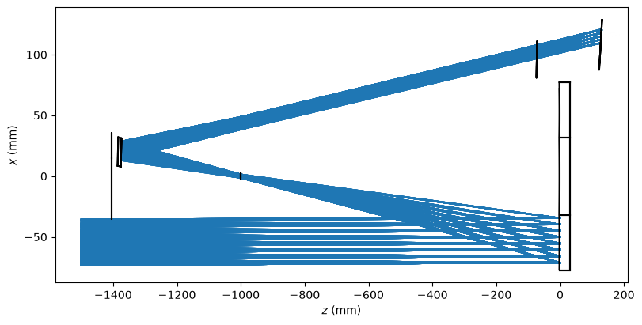
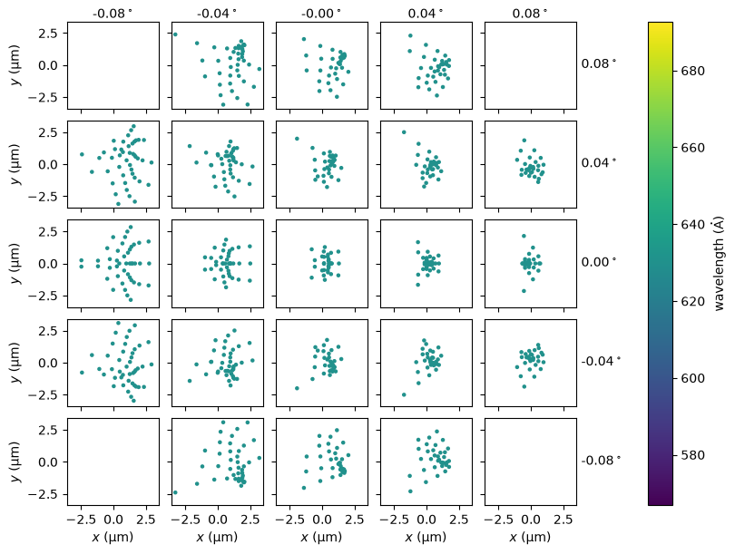

Point-Spread Function#
This report computes the point-spread function of the ESIS optical system.
[1]:
import matplotlib.pyplot as plt
import astropy.visualization
import astropy.units as u
import named_arrays as na
import esis
Start by loading the proposed optical design
[2]:
instrument = esis.flights.f1.optics.design_single(num_distribution=0)
instrument.field.num = 5
# spectrograph.pupil.num = 21
Plot a schematic of the spectrograph design
[3]:
with astropy.visualization.quantity_support():
fig, ax = plt.subplots(
figsize=(8, 4),
constrained_layout=True,
)
instrument.system.plot(
ax=ax,
# plot_rays=False,
components=("z", "x"),
color="black",
# plot_rays_vignetted=True,
kwargs_rays=dict(
color="tab:blue",
zorder=0,
),
)
ax.set_xlabel(f"$z$ ({ax.get_xlabel()})")
ax.set_ylabel(f"$x$ ({ax.get_ylabel()})")
# ax.set_aspect("equal")
WARNING: function 'sqrt' is not known to astropy's Quantity. Will run it anyway, hoping it will treat ndarray subclasses correctly. Please raise an issue at https://github.com/astropy/astropy/issues. [astropy.units.quantity]
2026-08-30 00:14:38 - astropy - WARNING: function 'sqrt' is not known to astropy's Quantity. Will run it anyway, hoping it will treat ndarray subclasses correctly. Please raise an issue at https://github.com/astropy/astropy/issues.

Plot a spot diagram for the nominal wavelength
[4]:
fig, ax = instrument.system.spot_diagram()
